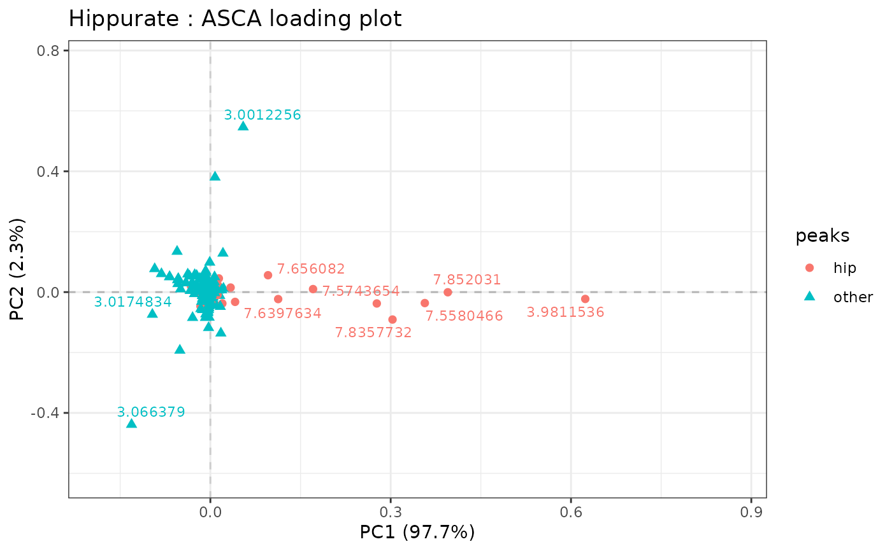
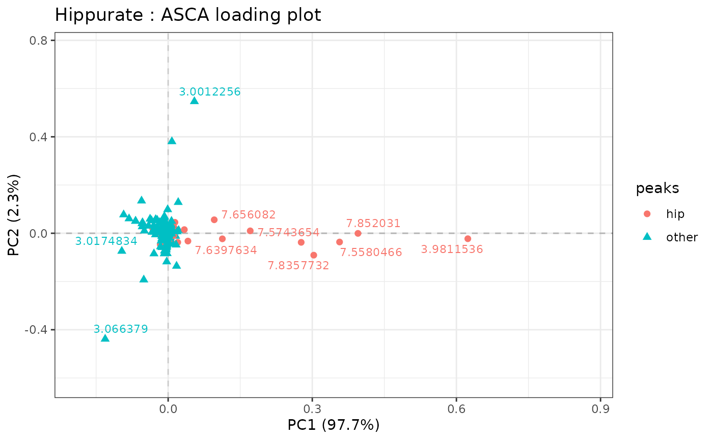

Draws a 2D loading plot of each effect matrix provided in lmpPcaEffects outputs. As a wrapper of the plotScatter function, it allows the visualization of effect loading matrices for two components at a time with all options available in plotScatter.
Usage
lmpLoading2dPlot(
resLmpPcaEffects,
effectNames = NULL,
axes = c(1, 2),
addRownames = FALSE,
pl_n = 10,
metadata = NULL,
drawOrigin = TRUE,
...
)Arguments
- resLmpPcaEffects
A list corresponding to the output value of
lmpPcaEffects.- effectNames
Names of the effects to be plotted. If
NULL, all the effects are plotted.- axes
A numerical vector with the 2 Principal Components axes to be drawn.
- addRownames
Boolean indicating if the labels should be plotted. By default, uses the column names of the outcome matrix but it can be manually specified with the
points_labsargument fromplotScatter.- pl_n
The number of labels that should be plotted, based on the distance measure \(d\) (see Details).
- metadata
A nxk "free encoded" data.frame corresponding to
designinplotScatter.- drawOrigin
if
TRUE, draws horizontal and vertical intercepts at (0,0) based on theplotScatterfunction.- ...
Additional arguments to be passed to
plotScatter.
Details
lmpLoading2dPlot is a wrapper of plotScatter. See ?plotScatter for more information on the additional arguments.
The distance measure \(d\) that is used to rank the variables is based on the following formula: $$d = \sqrt(P_{ab}^2*\lambda_{ab}^2)$$ where \(a\) and \(b\) are two selected Principal Components, \(P_{ab}\) represents their loadings and \(\lambda_{ab}\) their singular values.
Examples
data("UCH")
resLmpModelMatrix <- lmpModelMatrix(UCH)
resLmpEffectMatrices <- lmpEffectMatrices(resLmpModelMatrix)
resASCA <- lmpPcaEffects(resLmpEffectMatrices)
lmpLoading2dPlot(resASCA, effectNames = "Hippurate")
 # adding color, shape and labels to points
id_hip <- c(126:156, 362:375)
peaks <- rep("other", ncol(UCH$outcomes))
peaks[id_hip] <- "hip"
metadata <- data.frame(peaks)
lmpLoading2dPlot(resASCA,
effectNames = "Hippurate",
metadata = metadata, addRownames = TRUE, color = "peaks",
shape = "peaks"
)

# changing max.overlaps of ggrepel
options(ggrepel.max.overlaps = 30)
lmpLoading2dPlot(resASCA,
effectNames = "Hippurate",
metadata = metadata, addRownames = TRUE, color = "peaks",
shape = "peaks", pl_n = 20
)
#> Warning: ggrepel: 4 unlabeled data points (too many overlaps). Consider increasing max.overlaps
# adding color, shape and labels to points
id_hip <- c(126:156, 362:375)
peaks <- rep("other", ncol(UCH$outcomes))
peaks[id_hip] <- "hip"
metadata <- data.frame(peaks)
lmpLoading2dPlot(resASCA,
effectNames = "Hippurate",
metadata = metadata, addRownames = TRUE, color = "peaks",
shape = "peaks"
)

# changing max.overlaps of ggrepel
options(ggrepel.max.overlaps = 30)
lmpLoading2dPlot(resASCA,
effectNames = "Hippurate",
metadata = metadata, addRownames = TRUE, color = "peaks",
shape = "peaks", pl_n = 20
)
#> Warning: ggrepel: 4 unlabeled data points (too many overlaps). Consider increasing max.overlaps